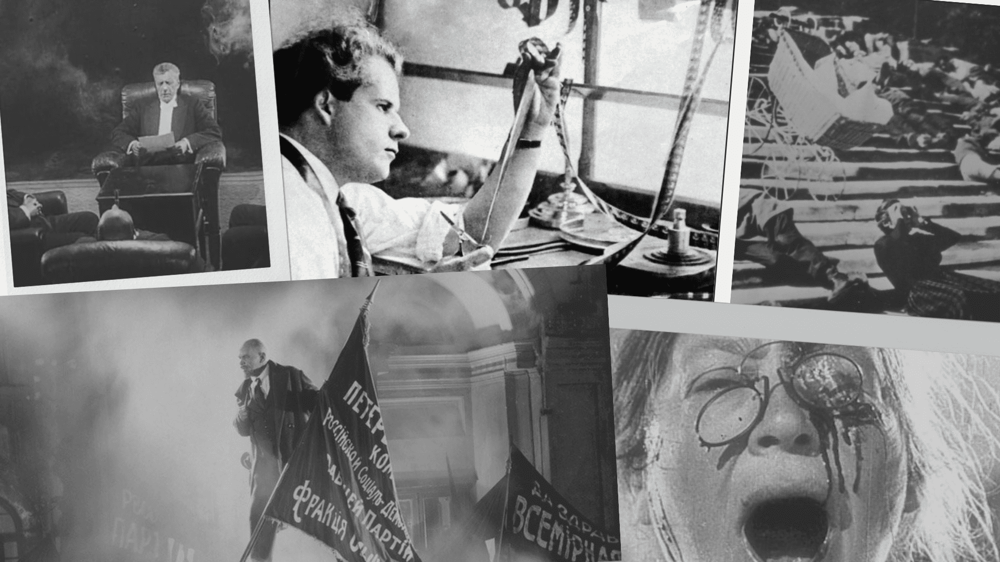

home
Soviet Montage...
a groundbreaking film movement in 1910s-1930s Russia, revolutionized global film editing. Founded by Lev Kuleshov at Moscow Film School, it's known for five montage types: Metric, Rhythmic, Tonal, Overtonal, and Intellectual. This movement reshaped film editing worldwide.

1917
keyboard_double_arrow_right
The Russian Revolution takes place, leading to political and social changes in Russia.
Lev Kuleshov establishes the Kuleshov Workshop, a film school that becomes a hub for experimentation and innovation in filmmaking.
keyboard_double_arrow_left
1919
1924
keyboard_double_arrow_right
Sergei Eisenstein's film "Strike" is released, showcasing his early use of montage techniques.
Eisenstein's groundbreaking film "Battleship Potemkin" is released, becoming a landmark in Soviet Montage filmmaking.
keyboard_double_arrow_left
1925
1926
keyboard_double_arrow_right
Vsevolod Pudovkin's film "Mother" is released, further contributing to the development of Soviet Montage.
Eisenstein's film "October" is released, exploring the events of the October Revolution through montage techniques.
keyboard_double_arrow_left
1928
1929
keyboard_double_arrow_right
Eisenstein's film "The General Line" is released, emphasizing the importance of collective farming and socialist ideals.
The Soviet government begins to exert more control over the content and messages of films, limiting the artistic freedom of filmmakers.
keyboard_double_arrow_left
1930
1934
keyboard_double_arrow_right
The doctrine of socialist realism is officially adopted, requiring filmmakers to adhere to specific guidelines and themes in their work.
World War II and the post-war period lead to a decline in Soviet Montage filmmaking, as filmmakers focus on propagandistic war films.
keyboard_double_arrow_left
1940s
1950s-1960s
keyboard_double_arrow_right
The Thaw period in the Soviet Union allows for some experimentation and a brief revival of artistic freedom in filmmaking.
Filmmakers like Andrei Tarkovsky and Sergei Parajanov challenge the constraints of socialist realism and explore more poetic and personal filmmaking styles.
keyboard_double_arrow_left
1970-1980s
1991
keyboard_double_arrow_right
The collapse of the Soviet Union leads to significant changes in the film industry, allowing for greater artistic freedom and experimentation.


.jpeg)

.jpeg)